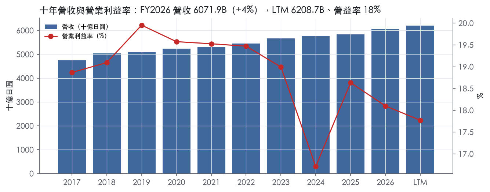

評等總表 › 未分類 › 9433.T
ＫＤＤＩ（9433.T）
減損半還原、倍數留治理折價，看多｜評等 加碼｜目標價 3256
評等歷史與財報快評
| 報告日 | 評等 | 目標價 | 當時股價 | 超額報酬 |
|---|---|---|---|---|
| 2026-11-16 | 加碼 | 3,256 | 2,958 | +5.0% |
| 評等 | 加碼（邊界，鄰近中立） |
| 12 個月目標價 | 3256 日圓 |
| 現價 | 2958.50 日圓（2026-11-16） |
| 預期報酬 | 股價 +10.1%＋股息 2.8%＝總報酬 +12.8%；日股門檻 7.8%，超額 +5.0% |
| 估值方法 | EV/EBITDA 7.2x，套在第 5–8 季的EBITDA（也就是一年後的未來四季） |
| 三情境 | 熊 2708／基準 3318／牛 3785 |
| 研究流程 | 四位研究員兩輪辯論＋研究總監裁決 |
| 資料來源 | EDINET、TDnet、J-Quants、Yahoo、FRED（全免費） |
目錄
第一章 結論摘要
減損半還原、倍數留治理折價，看多（研究總監裁決，四位研究員兩輪辯論後）
評等 加碼（邊界，鄰近中立）｜12 個月目標價 3256 日圓（總監三情境機率加權 3317 與研究員中位數 3195 各半）｜現價 2958.50（2026-11-16）
預期報酬：股價 +10.1%＋股息 2.8%＝總報酬 +12.8%。日股門檻 7.8%，超額 +5.0%，離中立的分界不到三個百分點，屬邊界評等（落在其他級距的機率約五成）。
估值方法：EV/EBITDA 7.2x，套在第 5–8 季的EBITDA（也就是一年後的未來四季）。三情境：熊 2708（20%）／基準 3318（54%）／牛 3785（26%）。
什麼會讓研究總監改變看法：2027-02 第三季短信出現第二筆 30B 以上減損、或電信核心調整後營業利益年增跌破 8%，我把營益率退回 R1 的不還原路徑並轉中性；反之無新減損且公司上修計畫，倍數往 7.5x 移。
投資論點
- 減損只還原一半：上半年減損只有一筆，我們只還原一半，報表營益率三年升到 18.8%。
- 靠盈餘不靠倍數：目標倍數 7.2x 低於市場持平 7.7x，報酬來自盈餘、股息與買回。
- 第二筆減損：2027-02 第三季短信若再出現 30B 以上減損，我們轉為中性。
關鍵數字
| 過去四季（實際，FY2027Q2） | 未來四季 | 第 5–8 季 | 第 9–12 季 | |
|---|---|---|---|---|
| 營收（B） | 6,208.7B | 6,519.2B | 6,819.0B | 7,119.1B |
| 營收成長 | 5.3% | 5.0% | 4.6% | 4.4% |
| 營業利益率 | 17.8% | 18.4% | 18.6% | 18.8% |
| EPS（日圓） | 188.00 | 229.66 | 250.19 | 272.02 |
| EPS 成長 | 11.5% | 22.2% | 8.9% | 8.7% |
| 每股股息（日圓） | — | 0.00 | 0.00 | 0.00 |
| P/E（現價） | 15.7x | 12.9x | 11.8x | 10.9x |
| 股息殖利率（現價） | 2.8% | — | — | — |
過去四季為申報數字；預測為研究總監的假設、程式計算。倍數與殖利率都用現價計算，用來看現價對應各期獲利的高低。
三情境
| 情境 | 機率（歷史） | 故事 | 未來四季營收成長 | 第 5–8 季營益率 | 倍數 | 目標價 | 股價漲跌 |
|---|---|---|---|---|---|---|---|
| 熊 | 20%（19%） | 風險表第 1 條減損重現（2027-02 第三季短信）加第 3 條 NTT 法規則與集團一體化壓價壓佣金，FY2028 計畫上調設備投資、買回縮手，倍數回到前瞻帶 P75–P90 之間 | 3.5% | 17.5% | 6.8x | 2708 | -8.5% |
| 基準 | 54%（53%） | 核心槓桿扣掉成長分部稀釋與半筆常態減損，GAAP 營益率緩升到 18.8%，淨負債因金融擴表比模型降得慢，倍數保留治理折價 | 5.0% | 18.6% | 7.2x | 3318 | 12.1% |
| 牛 | 26%（28%） | 第三季無新減損、調整後與 GAAP 落差收斂、2027-05 上修中期目標，治理折價消失、倍數回到市場持平 7.7x，營益率不越過十年高點 20.0% | 5.6% | 19.3% | 7.7x | 3785 | 27.9% |
目標價由程式依研究總監的驅動與倍數計算；機率由研究總監給定。括號內是歷史頻率：把這檔股票過去十年 12 個月報酬的波動形狀，置中在基準情境，結果落在各情境附近的比例。

四位研究員用不同方法各自估值，回應研究總監的質疑後交出第二輪，最後由總監逐點裁決。各研究員的主張見第七章，裁決理由見第八章，完整論證見《研究底稿》。
| 立場（一輪→二輪） | 加權目標價（一輪→二輪） | 評等（一輪→二輪） | 第二輪倍數 | 熊～牛目標價 | |
|---|---|---|---|---|---|
| R1 成長與敘事 | 中性→中性 | 3296→3204 | 加碼→中立 | 7.2x | 2375～3699 |
| R2 資本報酬與價值 | 看空→中性 | 2812→3064 | 減碼→中立 | 7.4x | 2567～3519 |
| R3 盈餘品質與下檔 | 中性→中性 | 3079→3187 | 中立→中立 | 7.0x | 2404～3688 |
| R4 市場隱含預期 | 中性→中性 | 3244→3359 | 中立→加碼 | 7.3x | 2467～3728 |
| 研究總監裁決 | 看多 | 3256 | 加碼 | 7.2x | 2708～3785 |
目標價由程式依各自的驅動與倍數計算；評等＝機率加權總報酬 − 日股門檻。
第二章 業務概況
公司做什麼、賣給誰
KDDI是日本第二大行動通信運營商，以「au」「UQ mobile」「povo」多品牌提供5G通信服務，並將通信與金融、能源、LX（生活轉型）等服務連結，為個人與法人客戶創造附加價值。集團由KDDI本社、連結子公司193家（國內133家、海外60家）及權益法適用關聯公司與共同支配企業46家構成，主要事業為「個人事業」與「企業事業」。海外方面，公司將國內經驗複製到蒙古，提供通信、金融與影視娛樂服務，並支援緬甸當地電信業者。法人客戶面向上，公司提供智慧型手機等裝置、網路、雲端等多元解決方案，並以「Telehouse」品牌提供資料中心服務，另推出AI商業平台「WAKONX」協助客戶解決產業特有課題。整體而言KDDI是一家電信核心業務穩定、同時往金融、能源、數據中心、AI整合等鄰接領域擴張的綜合數位基建公司。
業務分部與產品
FY2026財年起KDDI將報告分部由「個人／企業」兩區重編為「電信核心（テレコムコア）」「個人成長（パーソナルグロース）」「企業成長（ビジネスグロース）」三區，以電信核心創造的穩定利潤與投資原資，再投資到兩個成長分部。電信核心聚焦行動通信收入與營業利益的穩定成長，並透過LTV導向的結構改革與AI應用提升通信品質與營運效率；FY2027上半年（2026年4月–9月）電信核心營收2,201.04B日圓（年增3.1%），調整後營業利益435.67B日圓（年增16.7%）。個人成長分部涵蓋金融、能源、裝置、Ponta Pass與羅森（LAWSON）相關業務，FY2027上半年營收605.31B日圓（年增8.3%），調整後營業利益114.94B日圓（年增3.7%），主要受金融事業收入與裝置相關收入增加、以及羅森權益法投資利益增加帶動。企業成長分部涵蓋AI整合、網路安全、資料中心、聯網（Connected）與AI-BPO，FY2027上半年營收330.92B日圓（年增10.2%），調整後營業利益39.97B日圓（年增18.8%），由網路安全・AI整合與資料中心收入增加驅動。三分部中電信核心仍是營收與利潤規模最大的基礎，兩個成長分部規模雖小但增速明顯快於核心，驗證公司「核心養成長」的資本配置邏輯。
客戶、地區與通路
KDDI客戶結構分為大眾個人消費者（行動通信、金融、能源、LX服務）與法人客戶（網路、雲端、資料中心、AI整合、資安）兩大群體。地理上以日本國內為主體，海外布局集中在蒙古（MobiCom，持股98.8%）、緬甸（支援MPT電信業者運營）、美國（KDDI America）、加拿大、英國（KDDI Europe、Telehouse歐洲資料中心）、中國（北京凱迪迪愛通信技術，持股85.1%）及新加坡（KDDI Asia Pacific）；10-K未揭露各地區占營收的具體比重。通路與生態圈夥伴涵蓋沖繩Cellular、JCOM（有線電視）、UQ Communications（無線寬頻）、au金融控股、羅森（持分法共同支配企業，持股50%）等，形成通信＋零售＋金融的跨業連結。大股東結構顯示京瓷（14.75%）與豐田汽車（9.54%）為KDDI長期戰略股東，兩者同時也是業務合作夥伴（京瓷為母公司關係、豐田在車聯網／移動出行領域合作）；KDDI亦反向持有豐田汽車股份作為政策保有股，顯示雙方交叉持股綁定關係。
最近四季發生了什麼
FY2026Q3（2025年10–12月）營收1,555.79B日圓，年增7.1%，營益率19.4%（is.revenue）。FY2026Q4（2026年1–3月）營收1,600.12B日圓，年增4.8%，營益率降至15.2%，顯示第四季通常受年度一次性費用或減損影響而利潤率季節性走低（is.revenue）。FY2027Q1（2026年4–6月）營收1,487.32B日圓，年增5.1%，營益率回升至21.1%（is.revenue）。FY2027Q2（2026年7–9月，即當中間期）合併營收3,052.81B（4.7%增），主因行動通信收入、金融事業收入、裝置相關收入、網路安全・AI整合及資料中心收入增加；調整後營業利益633.08B（13.9%增），但因子公司AEON Holdings及menu株式会社的商譽與可辨識無形資產減損損失，含減損後營業利益僅559.29B（0.8%增）；歸屬母公司調整後中間利益390.05B（13.6%增），含Kakaku.com權益法適用除外產生之重新計量利益等因素後，實際歸屬母公司中間利益為363.27B（0.9%增）。公司全年計畫維持營收6,410.00B日圓、調整後營業利益1,210.00B日圓、歸屬母公司調整後淨利731.00B日圓、EPS 196.29日圓不變，與2026年5月12日公布內容相同。對比資料包FY2026全年營收6,071.91B、淨利707.11B，公司FY2027全年計畫隱含營收年增約5.6%、調整後淨利年增約3.4%，上半年調整後營業利益已完成全年計畫的52.3%，執行進度正常甚至略快，但實際（含減損）營業利益與淨利因一次性減損大幅侵蝕，顯示管理層「調整後」口徑與GAAP口徑之間的落差正在擴大，是解讀本期財報時必須同時看兩套數字的原因。
公司自己說的成長引擎與策略
公司在FY2026-2028中期經營戰略「Power-to-Connect 2028」中提出「AI前提社會」觀念，主張AI將從「使用的時代」轉為「理所當然的時代」，而難以被AI取代、同質化的價值才是差異化關鍵。為此公司提出三個「Fusion」：Real-Tech Fusion（顧客體驗中現實與科技的融合）、Infrastructure Fusion（通信基礎與AI基礎的融合，以「數位地帶構想」打造涵蓋陸海空的全國低延遲網路與AI運算資源基盤）、HR Fusion（多元技能與經驗融合，培養「雙手兼具」人才）。財務目標方面，公司以調整後營業利益年複合成長率（CAGR）5%為目標，電信核心維持穩定成長、兩個成長分部追求兩位數成長，並將ROE與ROIC利差列為重要經營指標並與董事薪酬連動；股東回報政策為調整後當期淨利的配息率40%以上、配合事業成長穩定增配，庫藏股買回則視成長投資的回報比較機動實施。公司並揭露子公司BIGLOBE及其子公司Gee Plan涉及廣告代理業務的不實循環交易事件，已提交改善報告書給東證，並承諾強化集團治理、風險感知與事業計畫驗證機制。研發方面公司推動「衛星成長戰略」，核心聚焦5G與生成式AI社會實裝，並布局Orbit1（DX等）與Orbit2（移動出行、宇宙等）未來成長領域，含與Nokia Bell Labs的6G聯合研究、與AMD的晶片合作、月球-地球光通信技術驗證等。整體看，KDDI的敘事是「電信核心撐現金流、兩個成長分部衝CAGR、AI與資料中心是下一輪資本支出重點」，但BIGLOBE循環交易醜聞與本季減損暴露出集團治理與子公司管理仍有漏洞，這會是近期估值重估的雜訊來源。公司調整後營業利益上半年已達全年計畫52%，若下半年維持同等步調，全年調整後營業利益上緣存在上修可能，但實際GAAP利潤受減損侵蝕的趨勢若持續，市場可能更關注「調整後」與「報表」利潤的收斂速度。日股普遍期初財測保守、實際常超標的慣性，加上公司明確不調整本次計畫，意味管理層對下半年景氣能見度仍偏謹慎，這點值得在後續季度持續追蹤。

第三章 經濟護城河
結論：窄，趨勢變窄
KDDI 評為窄護城河，趨勢變窄。我們有把握未來 5 年以上 ROIC 仍高於日圓資本成本，但沒有把握撐過 10 年。三項證據支撐這個判斷：
- 頻譜執照與寡占結構提供的進入障礙仍在。
- 利潤率十年波動極小。
- ROIC 從高點一路下滑，最新值已跌破量化底稿的資本成本代理值，因此不給寬，趨勢判變窄。
優勢來源
主要優勢是無形資產（法定執照）與效率規模，轉換成本只是次要且受法規壓制。
無形資產：法定執照
- 在日本國內經營電信服務，必須依《電氣通信事業法》取得登錄；設置無線局的通信設備，必須依《電波法》取得執照。
- 公司若有《電波法》規定之罪並受罰金以上刑罰，執照可被拒發或取消；開設計畫的認定也可被撤銷。
- 頻譜是不可複製的稀缺資產，新進者無法用錢在短期內買到同等的頻段組合與基地站密度。
效率規模
- 被指定為須申報接續約款的第二種指定電氣通信設備業者，只有 NTT Docomo、SoftBank、Wireless City Planning、KDDI、沖繩 Cellular 與 UQ Communications。
- 這份名單除了 KDDI 與 SoftBank 各自的子公司，實質上只有三大集團，屬典型的寡占網路市場。
- 單年電信設備投資額（含軟體）達 683.75B，研發費總額 40.00B。
- 這種投資門檻使全國網路的單位成本只有既有大型業者能攤平，市場容不下太多新進者。
- 在 Opensignal 的通信體感分析中，KDDI 取得 6 個部門第 1 名，顯示規模投資確實轉化為品質領先。
轉換成本：次要且受法規壓制
- 公司明說要讓成長領域的服務提高顧客黏著度，以降低電信核心的解約率。
- 綁定工具包括金融、能源、Ponta Pass 與羅森。
- 但法規禁止過度的綁約，以及其他不當的期間拘束，因此轉換成本只能靠生態圈「軟綁定」，強度有限。
數字上看得到嗎
數字支持「窄」，但不支持「寬」：利潤率穩定，ROIC 卻持續下滑並已觸及資本成本線。
支持的一面：利潤率極穩
- 毛利率十年平均 43.6%、標準差 1.0%；營業利益率十年平均 18.9%、標準差 0.9%。
- ROE 十年平均 14.1%、標準差 1.1%。
- 寡占定價紀律與規模優勢在損益表上清楚可見。
衝突的一面：ROIC 下滑
- ROIC 從 FY2019 的 14.4%降至 FY2026 的 9.0%，最新值就是十年最低。
- 最新值低於資本成本代理值 10.1%。
- 有資料的 8 年中，ROIC 高於資本成本 7 年，十年平均利差 2.1%。
- 同期淨負債從 FY2024 的 1,097.18B升至 FY2026 的 3,789.25B。
- ROIC 下滑主要來自投入資本擴張（併購與金融、資料中心等資本密集業務），而不是核心定價能力流失。
為什麼仍維持「窄」而不下修為「無」
- 底稿的資本成本代理值以美國 10 年債 5.1為基礎，不是日本 10 年公債 2.841。
- 以日圓計價的資本成本應明顯低於 10.1%，因此 9.0% 的 ROIC 在日圓基準下仍可能維持正利差。
- 但利差已大幅收窄，所以趨勢判變窄。
什麼會侵蝕它
最大威脅是資本配置稀釋 ROIC，其次是頻譜重分配與法規壓價。
- 資本配置稀釋 ROIC
- 新成長分部與 AI 基盤投資會持續擴大投入資本。
- 減損已經發生：子公司 AEON Holdings 與 menu 株式会社認列商譽及可辨識無形資產減損損失。
- 這說明非電信併購的回報低於預期。
- 頻譜重分配
- 電波監理審議會的有效利用評價若未達標，既有業者正在使用的頻率可被列為特定基地站重新開設的對象。
- 這直接削弱執照護城河的永久性。
- 法規壓價
- 法規禁止「買機的通信資費比不買機更優惠」，也禁止過度綁約。
- 這限制了以補貼換黏著度的空間。
- 品牌自我蠶食
- 公司以 au、UQ mobile、povo 多品牌提供服務。
- 低價品牌承接用戶外流的同時，也壓低整體 ARPU 天花板。
- 集團治理
- 子公司 BIGLOBE 等被查出不存在實體的虛構循環交易。
- BIGLOBE 期末債務超過 63.89B。
- 子公司管控不足會持續吞噬核心創造的超額報酬。
對估值的含意
目標倍數應相對日本電信同業持平，不給溢價。核心寡占與利潤穩定足以支撐不折價，但 ROIC 已降至十年最低、併購減損頻傳，不符合給予溢價所需的「10 年以上超額報酬」條件。目前 EV/EBITDA 8.2x 處於自身 5 年分位 95.2%，估值研究員不宜再用歷史高端倍數外推，倍數重估的前提是 ROIC 止跌回升。
量化底稿：報酬率與利潤率的水準與穩定度
| 指標 | 最新 | 十年平均 | 標準差 | 最低 | 最高 |
|---|---|---|---|---|---|
| ROIC | 9.0% | 12.2% | 1.9% | 9.0% | 14.4% |
| 毛利率 | 42.7% | 43.6% | 1.0% | 42.2% | 45.2% |
| 營業利益率 | 18.1% | 18.9% | 0.9% | 16.7% | 20.0% |
| FCF 利潤率 | 18.3% | 13.2% | 4.2% | 7.8% | 19.9% |
| ROE | 14.0% | 14.1% | 1.1% | 12.3% | 15.6% |
程式計算。資本成本代理值（10 年債＋5%）：10.1%；ROIC 平均減資本成本：2.1%；ROIC 有資料的 8 年中，高於資本成本 7 年。
第四章 財務體質與盈餘品質
結論：中品質，現金可支撐盈餘但槓桿攀升、股東回饋低於門檻且子公司舞弊事件顯示內控瑕疵
營業現金流／淨利 LTM 1.96x、FCF／淨利 1.02x，均為綠燈，盈餘有現金支撐【判，量化底稿】；但淨負債／EBITDA 從十年平均 0.80x 升到 LTM 1.99x（黃燈），且股東回饋率 42.9% 低於 50% 門檻（黃燈）【量化底稿】，加上有報揭露連結子公司「架空循環取引」（虛假循環交易）造成代理店手續費外部流出，三項合計拉到中品質。
現金有沒有跟上盈餘
現金轉換沒問題，FY2026 全年營業活動現金流 1,788.85B，較前期增加 539.81B，較歸屬母公司淨利 707.11B 明顯更高。FY2026 自由現金流為 708.40B，同樣遠高於前期 68.94B，應計比率 LTM 為 -3.6%（十年平均 -6.8%），屬綠燈、沒有靠應計灌盈餘的跡象【量化底稿】。但看最新半年報，FY2027 中間期營業現金流僅 428.20B，較去年同期 822.66B大減 394.45B，公司解釋是「金融事業的借入金從增加轉為減少」，這是金融子公司（au Financial）資產負債表項目波動造成的現金流雜訊，不是核心電信業務盈餘品質惡化。
公司調整了什麼（GAAP 與非 GAAP 的差距）
決算短信把「調整後營業利益」與「調整後中間利益」當主要表述指標，中間期調整後營業利益 633.08B，較 GAAP 營業利益 559.29B高出約 73.79B，公司說明差額主要是「連結子会社の株式会社イーオンホールディングス、menu株式会社に係るのれん及び識別可能無形資産の減損損失等」被排除。親會社調整後中間利益 390.05B vs GAAP 中間利益 363.27B，差額主要是股票會社カカクコム持分法適用除外產生的「再測定益」被排除。這兩項調整：商譽／無形資產減損是真實的經濟損失（投資失敗的事後確認），不該加回；カカクコム再測定益屬一次性會計處理（公司因持股比例變化從權益法改按公允價值衡量，產生非現金的重測收益），可以排除但方向相反（是美化 GAAP 數字而非壓低）。整體看，公司的非 GAAP 調整項目方向不一致（有的降低真實成本形象、有的排除非現金收益），估值研究員應以 GAAP 數字為主，非 GAAP 僅供參考。
資產負債表與資本配置
槓桿正在上升，FY2026 有息負債餘額 5,375.35B，較前期 4,437.56B增加 937.79B，淨負債／EBITDA 從十年平均 0.80x 升至 LTM 1.99x（黃燈）【量化底稿】。但若扣除金融子公司，母公司連結口徑有息負債僅 3,269.35B（前期 2,818.88B），自己資本比率 48.5%（前期 50.9%），顯示槓桿上升主要來自 au Financial 的存款與借款擴張（金融業務的資產負債表擴張），不是電信核心業務舉債。利息保障倍數 LTM 25.1x（十年平均 91.3x）仍遠高於綠燈門檻 8x，付息能力無虞【量化底稿】。股利＋回購／淨利 LTM 42.9%，低於 50% 綠燈門檻但仍接近十年平均 41.5%【量化底稿】；公司目標是「連結配当性向40％超」且 FY2026 已達成，股數稀釋年變動 -1.4%（三年平均 -4.1%）顯示持續回購減少股數【量化底稿】，回饋力度屬正常區間，非惡化訊號。
紅旗逐條說明
計分表本次沒有紅燈，兩個黃燈與一個應揭露事項逐條回應：
- 淨負債／EBITDA 黃燈（1.99x vs 十年均 0.80x）：真實槓桿上升，但主因是金融事業（au Financial Holdings）存款與借款擴大所致，排除金融事業後母公司口徑有息負債增速較緩、自己資本比率僅降 2.4 個百分點（50.9%→48.5%），屬可解釋的結構性變化而非核心電信業務惡化。
- （股利＋回購）／淨利 黃燈（42.9% vs 門檻 50%）：公司配息政策是「配当性向40％超」且已達成，42.9% 符合政策目標區間，並非回饋縮水，是門檻設定相對嚴格造成的假警報【判，抄：有報 FY2026 経営者による財政状態等の分析】。
- 連結子公司架空循環交易（有報揭露，非計分表紅燈但須回應）：有報明確揭露「当社連結子会社における不適切な取引が判明した点につき、本年3月に調査結果等を公表」，且 FY2026「その他の収益及びその他の費用」含「架空循環取引に伴う代理店手数料に係る外部流出額の計上」。金額相對 6,071.92B 營收規模很小（損失僅 2.03B／2.03B），財務衝擊有限，但反映內控與治理瑕疵，是真實的公司治理風險而非單純會計口徑問題，應在風險章節而非盈餘品質打折。
- SBC／營收無資料（—）：資料包未提供 SBC 細項，無法評估股權酬勞對盈餘稀釋程度，但稀釋股數年變動為負（回購持續減少股數），綜合看不構成隱藏成本的紅旗【判，量化底稿】。
對估值的含意
估值應以 GAAP 歸屬母公司淨利（LTM EPS 188.00）為基礎，不要直接套用公司「調整後利益」，因為減損項目是真實成本、カカクコム再測定益是非經常性但方向利多，兩者抵銷後淨影響有限，但分開揭露優於混用。槓桿黃燈主要來自金融子公司資產負債表擴張而非核心電信業務舉債，不足以單獨限制 EV/EBITDA 倍數，但子公司治理瑕疵事件應在風險前提中反映、對目標倍數給予小幅折價。整體盈餘品質中等，現金轉換良好支持不需要對 LTM 淨利做現金流折價，但基於治理與槓桿趨勢，建議對遠期盈餘成長假設保守看待。
量化底稿：盈餘品質計分表
| 項目 | LTM | 近三年 | 十年 | 燈號 | 規則 |
|---|---|---|---|---|---|
| 營業現金流／淨利 | 1.96x | 2.37x | 2.12x | 綠 | ≥1.00x 綠、<0.80x 紅 |
| 自由現金流／淨利 | 1.02x | 1.31x | 1.12x | 綠 | ≥0.90x 綠、<0.60x 紅 |
| 應計比率（(淨利−CFO)／平均總資產） | -3.6% | -6.0% | -6.8% | 綠 | ≤0.0% 綠、>5.0% 紅 |
| SBC／營收 | — | — | — | — | ≤3.0% 綠、>8.0% 紅 |
| 淨負債／EBITDA | 1.99x | 1.51x | 0.80x | 黃 | ≤1.50x 綠、>3.00x 紅 |
| 利息保障倍數（營業利益／利息） | 25.1x | 54.5x | 91.3x | 綠 | ≥8.00x 綠、<3.00x 紅 |
| 稀釋股數年變動 | -1.4% | -4.1% | -2.7% | 綠 | ≤0.0% 綠、>3.0% 紅 |
| （股利＋回購）／淨利 | 42.9% | 44.4% | 41.5% | 黃 | ≥50.0% 綠、<0.0% 紅 |
程式計算；燈號以 LTM（無則近三年平均）判定。
第五章 主要風險
結論：最大的風險不是電信本業競爭，而是「調整後利潤」與「GAAP利潤」持續擴大的落差——集團治理與子公司減損問題正在侵蝕市場對財測可信度的信任。
五大風險表
| 風險 | 觸發指標（看什麼數字、在哪裡看） | 對 EPS 的影響方向與粗略幅度 | 未來 12 個月發生機率（高／中／低） | 出處 |
|---|---|---|---|---|
| 子公司減損／調整後利潤與GAAP利潤落差擴大 | 每季決算短信「調整後營業利益」vs.「營業利益」差額；のれん餘額（540.28B，2026-09-30） | 負向，中～大：FY2027上半年調整後營業利益633.08B但含減損後僅559.29B，差額73.79B | 高 | |
| 集團治理失能（BIGLOBE循環交易事件類型重演） | 東證改善報告書後續追蹤公告；是否有新的子公司不當交易揭露 | 負向，方向不定幅度未知：過年度有報須訂正，已提交改善報告書 | 中 | |
| NTT法鬆動／NTT集團一體化加劇競爭 | 總務省對NTT法修法動向、NTT docomo／NTT Data完全子公司化後續整合公告 | 負向，方向明確幅度不明：公正競爭基礎若受損，公司自稱競爭優位性可能被相對削弱 | 中 | |
| 緬甸KSGM外匯管制與信用減損資產擴大 | 購入或組成信用減損金融資產餘額（目前27.05B）；緬甸外匯管制政策變化 | 負向，小～中：若日圓計價租賃債權進一步減損需認列 | 中 | |
| 通信網路障礙／資安攻擊導致服務中斷 | 公司是否公告重大通信障礙或資料外洩事件；24小時監控系統是否觸發重大事故通報 | 負向，方向明確幅度未知：公司承認品牌信譽與顧客滿意度受損會影響經營成績 | 低 |
逐條說明
風險一：調整後利潤與GAAP利潤落差擴大。FY2027上半年公司調整後營業利益633.08B（年增13.9%），但納入AEON Holdings及menu株式會社商譽與可辨識無形資產減損損失後，實際營業利益僅559.29B（年增0.8%）。同樣地，調整後歸屬母公司中間利益390.05B（年增13.6%），納入Kakaku.com持分法適用除外重新計量利益等因素後，實際歸屬母公司中間利益363.27B（年增0.9%）。這代表公司財測與市場溝通的主軸數字（調整後）和GAAP報表數字之間的缺口正在擴大，若下半年再出現類似子公司減損，EPS的GAAP口徑表現將持續弱於「調整後」敘事所暗示的成長力度。
風險二：集團治理失能。連結子公司BIGLOBE及其子公司Gee Plan的廣告代理事業被特別調查委員會確認存在實體不存在的架空循環交易，公司已對過年度有價證券報告書進行訂正，並於2026年6月2日向東京證券交易所提交改善報告書。公司承認若改善措施未能適當整備運用，未來仍可能發生不適當交易或會計處理，進而影響經營成績。集團子公司數量龐大（連結子公司193家），監督半徑大，此類事件再現的機率不是極低。
風險三：NTT法鬆動與NTT集團一體化。公司明確將NTT法的維持列為確保公平競爭環境的前提，並指出NTT透過子公司化NTT docomo、NTT Data，若持續進行組織或事業整合，可能導致公正競爭受阻、NTT優先效率與集團利益，進而損害KDDI等競爭者的相對優位性。2025年5月21日電気通信事業法及NTT法的修正法已成立，後續具體規則訂定方向仍待觀察，這是可監測、有明確時間軸的政策風險。
風險四：緬甸KSGM外匯管制。子公司KSGM持有以日圓計價的租賃債權，因2022年4月起緬甸中央銀行及外匯監督委員會的外匯管制規制，回收受到限制，公司已認列購入或組成之信用減損金融資產27.05B。若測定該金融資產所用假設因情勢變化而改變，可能對償卻原價金額產生重大影響。這部分金額相對集團資產規模（合併資產合計18,846.33B）屬小，但屬於可追蹤的具體數字，值得列入監測清單。
風險五：通信網路障礙與資安攻擊。公司明確說明若因網路系統或通信設備故障導致服務停止，將影響品牌形象、信譽及顧客滿意度，進而影響經營成績；同時，惡意第三方的網路攻擊可能造成服務停止或品質下降，公司已建立24小時365天監控體系作為應對。此類事件屬尾部風險，單一事件機率低，但一旦發生衝擊可能非線性放大（例如大規模誤計費、系統停擺），且屬於可由公開重大事故公告監測的項目。
公司沒寫、但我們認為該注意的
東證PBR改善壓力下的庫藏股買回節奏放緩，可能弱化股價支撐。財報顯示財務活動現金流出中「自己株式の取得による支出」較前期減少（財務活動CF -283.17B vs 前期-348.98B，減少65.81B），顯示庫藏股買回力度可能較前期放緩。公司股東回報政策為配息率40%以上配合機動買回，若買回節奏持續放緩，在東證要求改善資本成本與股價的大環境下，可能削弱股價相對TOPIX的支撐力道，這點公司未在風險章節中揭露。
京瓷與豐田汽車的交叉持股若加速處分，可能對KDDI股價造成供給壓力。京瓷持股14.75%、豐田汽車持股9.54%為KDDI重要戰略股東，KDDI亦反向持有豐田股份作為政策保有股。在東證推動政策保有股處分的大趨勢下，若任一方加速減持，市場上流通股數增加可能對股價造成短期供給壓力，公司風險章節未提及此項交叉持股處分風險。
第六章 市場在定價什麼
現價 2958.50 對應 trailing（過去四季）P/E 15.7x、EV/EBITDA 8.1x、EV/EBITA —、EV/Sales 2.3x、FCF 殖利率 6.6%。主要估值倍數 EV/EBITDA 現在 8.2x，落在5 年區間第 95 百分位（P10／P50／P90 = 5.5x／6.3x／8.0x）。

把程式的機械基準預測放到現價下，市場付的前瞻倍數是：EV/EBITDA（未來四季） 7.7x、P/E（未來四季） 13.0x、EV/EBITDA（第 5–8 季） 7.2x、P/E（第 5–8 季） 11.9x。反推 DCF 顯示市價隱含未來五年營收年成長 4.0%（WACC 9.0%、終值成長 3.0%、FCF 利潤率 12.8%，SBC 不加回）。
| 倍數 | 現在 | 5 年 P10 | 5 年 P50 | 5 年 P90 | 現在分位 | 全期 P50 |
|---|---|---|---|---|---|---|
| P/E | 15.7x | 13.3x | 14.8x | 16.4x | 74.7% | 13.3x |
| EV/EBITDA | 8.2x | 5.5x | 6.3x | 8.0x | 95.2% | 5.7x |
| EV/EBITA | 13.2x | — | — | — | — | 7.8x |
| EV/EBIT | 13.3x | 9.2x | 10.6x | 13.1x | 96.0% | 9.4x |
| EV/Sales | 2.4x | 1.7x | 1.9x | 2.4x | 85.9% | 1.8x |
| P/S | 1.8x | 1.6x | 1.7x | 1.8x | 83.4% | 1.6x |
| P/FCF | 15.3x | 9.0x | 12.6x | 20.3x | 60.4% | 12.6x |
trailing 倍數（股價 ÷ 過去四季）；分位以每個交易日計算。
（日股同業籃尚未建置：評等門檻用日股絕對門檻＝日本 10 年公債＋股權風險溢酬 5%，見首頁。）
事後實現前瞻倍數帶（EV/EBITDA，2018-11-21..2025-11-19）：P10／P50／P90 = 4.3x／5.5x／7.0x。它是每個交易日的股價除以之後四季實際實現的指標；一年後，今天的第 5–8 季正是那時的未來四季，所以這條帶是 12 個月目標價的同口徑倍數。因為用的是事後實際而非當時預期，過去成長超乎預期的公司這條帶會偏低。
程式的機械基準（成長率從過去四季年增率三年收斂到 6%、利潤率持平）用 事後實現前瞻 EV/EBITDA P50 估值得到 2304（-22.1%），市場現行前瞻倍數（現價 ÷ 基準 未來四季指標）一年後持平，套在基準 第 5–8 季指標得到 3594。這兩個數字只是參考點，不是本報告的目標價；研究員對這個定價的回應在第七章。
第七章 四位研究員的看法
下表是每位研究員第一輪（各自獨立）與第二輪（回應研究總監的質疑後）的結果。目標價全由程式依各自的假設計算。
| 立場（一輪→二輪） | 加權目標價（一輪→二輪） | 評等（一輪→二輪） | 第二輪倍數 | 熊～牛目標價 | |
|---|---|---|---|---|---|
| R1 成長與敘事 | 中性→中性 | 3296→3204 | 加碼→中立 | 7.2x | 2375～3699 |
| R2 資本報酬與價值 | 看空→中性 | 2812→3064 | 減碼→中立 | 7.4x | 2567～3519 |
| R3 盈餘品質與下檔 | 中性→中性 | 3079→3187 | 中立→中立 | 7.0x | 2404～3688 |
| R4 市場隱含預期 | 中性→中性 | 3244→3359 | 中立→加碼 | 7.3x | 2467～3728 |
| 研究總監裁決 | 看多 | 3256 | 加碼 | 7.2x | 2708～3785 |
目標價由程式依各自的驅動與倍數計算；評等＝機率加權總報酬 − 日股門檻。
分歧度：第一輪 加權目標價 2812～3296（區間＝現價的 16%）· 倍數 7～7.8x · 立場 中性×3、看空×1；第二輪 加權目標價 3064～3359（區間＝現價的 10%）· 倍數 7～7.4x · 立場 中性×4（方向一致）。

| 研究員 | 第二輪主張 | 堅持的理由 |
|---|---|---|
| R1 成長與敘事 | 中性，倍數 7.2x，減損視為每年常態，營益率只升到 18.5%。 | 營收只給 4.5／4.0／3.5%，十年只有 FY2018 超過 5%。 |
| R2 資本報酬與價值 | 中性，倍數 7.4x，錨在過去三年中位數，營益率持平 18.2%。 | 不用調整後口徑，減損與 BIGLOBE 治理問題讓報表利潤持續偏低。 |
| R3 盈餘品質與下檔 | 中性，倍數 7.0x，減損全額還原，營益率從 18.9% 升到 19.2%。 | 金融事業擴表讓淨負債比模型降得慢，所以不給更高倍數。 |
| R4 市場隱含預期 | 中性，倍數 7.3x，減損還原一半加槓桿，營益率升到 18.8%。 | 市場定錯的是營益率，電信核心利益年增 16.7%，槓桿是真的。 |
每位研究員的逐條回應與完整論證見《研究底稿》（9433.T_研究底稿_2026-11-16.docx）。
第八章 研究總監裁決
分歧登記
| 分歧點 | R1 成長 | R2 價值 | R3 品質 | R4 預期 | 什麼資料會分出勝負 |
|---|---|---|---|---|---|
| ① op_margin_y1–y3：上半年 73.79B 減損在預測期還原多少 | 不還原，18.3／18.4／18.5%，減損視為常態 | 不還原，18.2% 三年持平 | 全額還原，18.9／19.0／19.2%，取公司調整後計畫隱含水準 | 半還原 +0.4 點、槓桿 +0.2／0.4／0.6 點，18.4／18.6／18.8% | 2027-02 上旬 FY2027Q3 決算短信：九個月累計調整後與 GAAP 營業利益差額是否超過 73.79B |
| ② rev_growth_y2／y3 | 4.0／3.5% | 4.0／3.5% | 4.0／3.5% | 4.6／4.4% | 2027-05 FY2027 決算短信：營收對計畫 6,410.00B 的達成度、兩成長分部全年增速 |
| ③ multiple：錨與對市場持平 7.7x 的折價 | 7.2x q5_q8，P90 之上因成長斜率 | 7.4x ntm，trailing 3y P50，EV 含金融事業借款 | 7.0x q5_q8，結構性溢價被淨負債路徑偏樂觀抵銷 | 7.3x q5_q8，P90 之上因結構性差異，低於持平因治理折價 | 2027-09-30 半期報告書淨負債是否 ≥3,300B（R3）；FY2027 短信落差是否收斂到 20B 內（R2） |
| ④ 熊情境幅度與機率 | 6.3x，距基準 −26%，15% | 6.8x（ntm），−16%，23% | 6.3x，−25%，14% | 6.2x，−27%，13% | 置中分布 ≤−20% 十年只有 1%；對照表 R1／R3／R4 熊區歷史頻率 5–8% |
逐點裁決
① 營益率：選 R4。 基準的 17.8% 是 LTM GAAP 營益率，含上半年 AEON Holdings 與 menu 的減損——調整後營業利益 633.08B 對 GAAP 559.29B，「照 LTM 持平」等於假設往後每年都有一筆同級減損。R1、R2 不還原，證據是のれん 540.28B（2026-09-30）與 BIGLOBE 改善期，但有文件記載的減損只有這一筆（四位第二輪都撤回 FY2024 減損說法），把一筆放大成常態沒有依據。R3 全額還原，邏輯對——減損是非現金項目、不屬 EBITDA——但數值等於假設 GAAP 一年內追上調整後；風險表第 1 條把「再減損」評為 12 個月內高機率、連結子公司 193 家，零減損同樣沒有證據。R4 的拆法兩邊都站得住：電信核心上半年營收年增 3.1%、調整後營業利益年增 16.7%，槓桿是真的；個人成長營收增 8.3% 但利益只增 3.7%，稀釋也是真的。預測紀錄定方向：全組營業利益誤差中位數都是負值（預測偏低），R2 −4.8% 最偏、R4 −0.8% 最準且勝過基準 71%，我自己也偏低 −2.4%。往上修正支持不選 R1／R2；R3 的 y3 19.2% 已越過十年平均 18.9%（護城河章），R4 停在平均之下，是「修正偏低但不外推」的位置。
② 營收：選 R4。 上半年合併營收 3,052.81B 年增 4.7%：電信核心 2,201.04B（3.1%）、個人成長 605.31B（8.3%）、企業成長 330.92B（10.2%）；公司全年計畫 6,410.00B 隱含年增約 5.6%、5 月以來未調，上半年調整後營業利益已達計畫 52.3%（業務概況章）。R4 的 y1 5.0% 高於實績、低於計畫。R1 的 4.5% 假設下半年減速，理由是 FY2026Q3 基期 7.1%——基期是事實，但日本公司期初計畫保守、公司選擇不調，追上計畫不需要靠裝置收入。y2／y3 三位都給 4.0／3.5%，等於讓兩個成長分部減速到核心水準，與中期戰略把成長分部定在兩位數相反；R4 的 4.6／4.4% 落在反推 DCF 市場隱含的 4.0% 與公司設想之間，沒有外推兩位數。全組營收紀錄偏低 −0.6～−0.9%，再支持取高的一邊。
③ 倍數：own，7.2x，q5_q8。 錨是事後實現前瞻 EV/EBITDA 帶 P90 7.0x；市場持平 7.7x、零報酬 6.6x。四位都壓在持平之下，理由都是公司特有的——R2 第一輪「JGB 3.00 壓防禦股倍數」與 R4 第一輪「金融費用上升」已刪，利率不再出現在倍數裡。P90 之上的理由取 R4／R2 的結構性差異：資料包淨負債 3,574.70B含金融事業借款——有報揭露 FY2026 有息負債合計 5,375.35B、扣除金融事業後 3,269.35B——借款計入 EV、資金成本卻在 EBITDA 之上扣掉，而帶的大半期間在金融事業擴表之前（淨負債 FY2024 1,097.18B → FY2026 3,789.25B，dv.net_debt）。R1 的「成長斜率」理由較弱，帶的形成期 EBITDA 也在成長（FY2019 1,576.13B → FY2022 1,788.69B，dv.ebitda）。不給到 R4 的 7.3x，理由取 R3：模型淨負債只隨 FCF、股利、買回變動，但上半年公司口徑 FCF 92.10B（去年同期 341.39B）、金融事業非流動貸出金從 5,534.05B 增到 5,756.78B，淨負債會比模型降得慢；R3 用它抵掉全部結構性溢價過頭，我認列 0.1x（假設）。低於持平的 0.5x 是治理與落差折價：改善報告書 2026-06-02 提交後仍在執行期、同一半期兩筆減損；這些市場已知，我不假設惡化，但折價收回是牛情境的事，不放進基準。
④ 熊情境：幅度選 R2，機率 own。 R1、R3、R4 的熊距基準 −25%～−27%，置中分布 ≤−20% 十年只有 1%、對照表熊區歷史頻率 5–8%，三人卻給 13–15%——用「會不會發生」的證據撐「跌多深」，正是第一輪 V1／Q1 指出的問題；R2 接受並拉近到 −16%，R3 縮到 −25% 仍在十年未見區間。我取 R2 的熊驅動（營收 3.5／3.0／3.0%、營益率 17.5% 三年、資本支出 12.5%、股數 −1.5%）。倍數數字維持 6.8x，但 R2 是 ntm 配 trailing 帶（5y P50 6.3x 與 3y P50 7.4x 之間），換到 q5_q8 後錨改為前瞻帶 P75 6.3x 與 P90 7.0x 之間：熊情境市場收回成長斜率、治理折價加深，但金融事業的結構性差異不會在熊情境消失（R3 在 Q1 回應中自己承認）。對應風險表第 1 條（減損重現，打倍數）與第 3 條（NTT 法規則訂定與 NTT 集團一體化壓價與佣金，打營收與營益率）；R2 自訂的「FY2028 上調設備投資、回購縮手」對應 capex 12.5% 與股數 −1.5%。
漂移與總經偏離。 四位共接受 18 條意見、全部附證據，程式無旗標。R2 加權 +9.0%、靠攏 58%，R3 靠攏 65%，我逐條核：R2 的 7.0x→7.4x 來自我轉發的有報有息負債拆分（V2）、6.0x→6.8x 來自置中分布（V1）；R3 的 18.3%→18.9% 來自 Q2 的口徑論證（損益表「その他の費用」僅 7.37B，減損落在販管費 800.07B 內）。都是新證據或新論證帶出的修正，drift_rejections 為空。四位 macro_deviations 皆空：R3 熊情境取本行日本下行路徑（USDJPY 160、WTI 95）是取路徑非偏離；R4 第一輪牛情境單取低 JGB 已在 E3 撤回。我的假設無總經偏離；日銀升到 2.00% 對 au 金融子公司是利差正面、對母公司有息負債 3,269.35B 是負面，兩者相反且在 EBITDA 之下，交給程式利息路徑，不另加驅動。
最終假設與目標倍數
| 驅動 | 基準 | 最終 | 來源與理由 |
|---|---|---|---|
| rev_growth_y1／y2／y3 | 5.5／5.8／6.0% | 5.0／4.6／4.4% | R4；基準往 6% 收斂無依據，十年只有 FY2018 超過 5%（年度表） |
| op_margin_y1／y2／y3 | 17.8% 持平 | 18.4／18.6／18.8% | R4；減損半還原 +0.4 點、槓桿 +0.2／0.4／0.6 點，y3 低於十年平均 18.9% |
| capex_pct_rev | 10.8% | 11.5% | 四位一致 11.5–11.8%；LTM 10.8% 是低點，FY2026 11.2%、FY2024 13.0%（dv.capex_pct_rev），中期戰略以 AI 基盤與資料中心為投資重點 |
| tax_rate | 30.0% | 31.0% | R3；上半年法人所得稅 186.37B 對稅前中間利益 593.31B高於 30%，基準規則夾在 30% 上限 |
| share_change_pct | −3.7% | −3.0% | R4；上半年自己株式取得支出減少、財務 CF −283.17B 對前期 −348.98B，政策是「機動實施」；但東證 PBR 壓力與 FY2025→FY2026 股數 4.05B→3.85B 的紀錄不支持 R1–R3 的 −2.5% |
目標倍數 7.2x EV/EBITDA，horizon 第 5–8 季（劇本主尺 ebitda @ ntm_plus_1，與事後實現前瞻帶同口徑、不換算）。構成（假設）：前瞻帶 P90 7.0x，加金融事業計入 EV 的結構性差異 0.3x，減淨負債路徑偏樂觀 0.1x；低於市場持平 7.7x 的 0.5x 為治理與調整後／GAAP 落差折價；高於零報酬 6.6x。同業：日股同業籃未建置，護城河章「相對同業持平、不給溢價」以 P90 替代——7.2x 是對自家歷史的溢價，溢價部分有結構性解釋。trailing 口徑交叉：8.2x 落在 5 年帶 95.2% 分位，1 年帶 P10 7.8x 說明重估發生在過去一年、同期 JGB 升到 2.841，重估不是利率帶來的；我讓一年後倍數退到 7.2x，是把過去一年重估中尚未反映治理折價的那一塊收回。
三情境與機率
| 情境 | 機率 | 來源 | 驅動（相對基準覆蓋） | 倍數 | 故事 |
|---|---|---|---|---|---|
| 牛 | 26% | R4，倍數 7.6x 微調為 7.7x | 營收 5.6／5.4／5.0%；營益率 18.9／19.3／19.6% | 7.7x | 2027-02 第三季短信無新減損、落差收斂，2027-05 上修中期目標，治理折價消失、倍數回到市場持平；營益率不越過十年高點 20.0% |
| 基準 | 54% | director | — | 7.2x | 核心槓桿扣掉成長分部稀釋與半筆常態減損，GAAP 營益率緩升到 18.8%，淨負債因金融擴表比模型降得慢，倍數保留治理折價 |
| 熊 | 20% | R2，口徑換 q5_q8 | 營收 3.5／3.0／3.0%；營益率 17.5%×3；capex 12.5%；股數 −1.5% | 6.8x | 風險表第 1 條減損重現（2027-02 第三季短信）＋第 3 條 NTT 法規則與集團一體化壓價壓佣金，FY2028 計畫上調設備投資、買回縮手；倍數回到前瞻帶 P75–P90 之間 |
機率從歷史出發：置中分布 P75 +8%、P90 +15%、P25 −8%、P10 −12%；≥+10% 頻率 19%、≤−10% 18%；原始分布上漲 68%、中位 +6%。牛情境離基準約一成多，走到一半（+7% 附近）落在 P75 偏上，歷史頻率約四分之一，我給 26%。熊情境離基準約兩成，走到一半（−10% 附近）歷史頻率 18%，我給 20%；多出的 2 點來自風險表第 1 條評「高」（のれん 540.28B，第一個觸發點是 2027-02 上旬第三季短信）與第 3 條（NTT 法修正 2025-05-21 成立、規則未定）。牛 26% 高於熊 20%，與歷史順序一致——四位的對照表牛區都高於熊區，KDDI 置中分布右尾 P90 +15% 比左尾 P10 −12% 長，寡占定價、股息率 2.8%、持續買回是左尾短的結構原因；本部過去 22 份報告全部熊高於牛，這份不延續。牛倍數微調 +0.1x 的理由：R4 的牛故事是「治理折價大致消失」，倍數就該回到市場持平 7.7x，停在 7.6x 是故事與數字不一致。
我們與市場的差距在哪
現價隱含前瞻 EV/EBITDA 7.7x、P/E（NTM）13.0x、反推 DCF 五年營收成長 4.0%。差距在盈餘不在倍數：市場以含減損的 17.8% 營益率外推，我們認為減損只會部分重複、電信核心槓桿會把 GAAP 營益率推到 18.4–18.8%，營收 4.4–5.0% 也略高於 4.0%；倍數上我們比市場保守 0.5x，總報酬來自盈餘與股東回報、不靠倍數擴張——在 5 年分位 95% 的 trailing 倍數上這是唯一站得住的看多方式。立場看多，預期機率加權總報酬在門檻 7.8% 之上、評等加碼；若程式算出的超額不足以到加碼，差距在門檻本身——日股絕對門檻以 JGB 2.84% 加 5% 溢酬構成，比同業籃隱含報酬嚴，而股息率 2.8% 加約 3% 的股數減少已是不靠股價的回報——我仍維持看多。
可證偽主張
- 2027-02-15 前，FY2027Q3 決算短信九個月累計調整後營業利益年增 ≥10%（核心槓桿延續）。
- 2027-02-15 前，FY2027Q3 決算短信九個月累計「調整後營業利益 − GAAP 營業利益」≤90B（第三季無大額新減損；上半年差額 73.79B）。
- 2027-05-20 前，FY2027 決算短信全年營收 ≥6,350B 且調整後營業利益 ≥1,210B。
- 2027-11-15 前，LTM@FY2028Q2 GAAP 營益率 ≥18.2%。
- 2027-11-16 前，trailing EV/EBITDA（band.ev_ebitda 現在值）≥7.0x，市場不把倍數打回 5 年 P50 6.3x。
目標價拆解（程式計算）
現價 2958.50 → 點估目標價 3318 → 機率加權目標價 3317 → 目標價 3256，差距拆成五段：成長順延 +635 日圓（市場現行倍數 7.7x 一年後持平、獲利照機械基準）；倍數差 -268 日圓（總監倍數 7.2x vs 市場持平倍數 7.7x，同一機械基準預測）；盈餘差 -8 日圓（總監預測的第 5–8 季EBITDA 2,028.0B vs 機械基準 2,003.7B，同一倍數）；情境不對稱 -1 日圓（機率加權減點估）；研究小組平均 -61 日圓（總監機率加權 3317 與研究員第二輪中位數 3195 各半）。各段相加等於目標價減現價。本階段未接賣方共識，差距以市場隱含預期為對照。
第九章 估值與目標價
驅動假設：機械基準 vs 研究總監
| 驅動 | 機械基準 | 研究總監 | 差異 |
|---|---|---|---|
| 未來四季營收成長 | 5.5% | 5.0% | -0.5 pp |
| 第 5–8 季營收成長 | 5.8% | 4.6% | -1.2 pp |
| 第 9–12 季營收成長 | 6.0% | 4.4% | -1.6 pp |
| 未來四季營益率 | 17.8% | 18.4% | +0.6 pp |
| 第 5–8 季營益率 | 17.8% | 18.6% | +0.8 pp |
| 第 9–12 季營益率 | 17.8% | 18.8% | +1.0 pp |
| D&A／營收 | 11.1% | 11.1% | ＝ |
| 資本支出／營收 | 10.8% | 11.5% | +0.8 pp |
| SBC／營收 | 0.0% | 0.0% | ＝ |
| 稅率 | 30.0% | 31.0% | +1.0 pp |
| 股數年變動 | -3.7% | -3.0% | +0.7 pp |
研究總監只寫偏移，未寫的沿用基準。
研究總監假設下的三年預測
| 期 | 營收 | 成長 | 營益率 | 營業利益 | EBITDA | EBITA | 淨利 | EPS | FCF | 期末淨負債 |
|---|---|---|---|---|---|---|---|---|---|---|
| 未來四季 | 6,519.2B | 5.0% | 18.4% | 1,199.5B | 1,925.8B | 1,199.5B | 837.3B | 229.66 | 813.8B | 3,065.8B |
| 第 5–8 季 | 6,819.0B | 4.6% | 18.6% | 1,268.3B | 2,028.0B | 1,268.3B | 884.7B | 250.19 | 860.2B | 2,510.4B |
| 第 9–12 季 | 7,119.1B | 4.4% | 18.8% | 1,338.4B | 2,131.5B | 1,338.4B | 933.1B | 272.02 | 907.4B | 1,907.8B |
程式依上表的驅動計算；季度用最近四季季節性分攤；不含營運資金變動。
目標價
估值方法：EV/EBITDA 7.2x，套在第 5–8 季的EBITDA（也就是一年後的未來四季）。研究總監目標倍數的錨：事後實現前瞻 EV/EBITDA 帶 P90 7.0x 加金融事業借款計入 EV 的結構性差異 0.3x、減淨負債路徑偏樂觀 0.1x；低於市場持平 7.7x 的 0.5x 為治理與調整後／GAAP 落差折價。
計算：EBITDA（第 5–8 季） 2,028.0B × 7.2x＝EV 14,601.5B，減未來四季期末淨負債 3,065.8B＝權益價值 11,535.7B，除以第 5–8 季的股數 → 點估目標價 3318（12.1%）；隱含 P/E（未來四季）14.4x、P/E（第 5–8 季）13.3x、EV/EBITDA（第 5–8 季）7.2x、FCF 殖利率（第 5–8 季）7.5%。
總監三情境機率加權目標價 3317，研究員第二輪中位數 3195，兩者各半＝目標價 3256；預期報酬 股價 +10.1%＋股息 2.8%＝總報酬 +12.8%；減評等門檻 7.8%（日股絕對門檻 7.8%（日本 10 年公債 2.84%（2026-11-12）＋股權風險溢酬 5%；日股同業籃尚未建置））＝超額報酬 +5.0% → 評等 加碼（超額 >+15% 買進、+5～+15% 加碼、±5% 中立、−5～−15% 減碼、<−15% 賣出）。同一份資料重開研究小組，超額約有正負四個百分點的雜訊（一個標準差，二十檔實測）；以此估計，評等落在其他級距的機率約五成。超額離中立的分界不到三個百分點，應視為邊界評等。
| 情境 | 機率 | 未來四季成長 | 第 5–8 季成長 | 第 5–8 季營益率 | EBITDA（第 5–8 季） | 倍數 | 目標價 |
|---|---|---|---|---|---|---|---|
| 熊 | 20% | 3.5% | 3.0% | 17.5% | 1,895.6B | 6.8x | 2708 |
| 基準 | 54% | 5.0% | 4.6% | 18.6% | 2,028.0B | 7.2x | 3318 |
| 牛 | 26% | 5.6% | 5.4% | 19.3% | 2,103.5B | 7.7x | 3785 |
第十章 可證偽主張與追蹤點
| 主張 | 驗證日 | 看哪個數字 | 門檻 |
|---|---|---|---|
| 電信核心槓桿延續：FY2027 九個月累計調整後營業利益年增至少 10% | 2027-02-15 | FY2027Q3 決算短信 九個月累計調整後営業利益 年增率 | >= 10% |
| 第三季無大額新減損：九個月累計調整後與 GAAP 營業利益差額不超過 90B（上半年 73.79B） | 2027-02-15 | FY2027Q3 決算短信 調整後営業利益 − 営業利益（九個月累計） | <= 90B |
| FY2027 全年營收與調整後營業利益達計畫 | 2027-05-20 | FY2027 決算短信 売上高／調整後営業利益 | 売上高 >= 6,350B 且 調整後営業利益 >= 1,210B |
| GAAP 營益率回升到 y1 假設附近 | 2027-11-15 | LTM@FY2028Q2 GAAP 營益率（dv.op_margin） | >= 18.2% |
| 市場不把倍數打回 5 年中位 | 2027-11-16 | trailing EV/EBITDA（band.ev_ebitda 現在值） | >= 7.0x |
到期由程式結算（第 5 階段帳本）。
附錄 A 年度財務摘要
| 期 | 營收 | 成長 | 毛利率 | 營益率 | EBITDA | 淨利 | EPS | CFO | FCF | ROIC | 淨負債 | 稀釋股數 |
|---|---|---|---|---|---|---|---|---|---|---|---|---|
| FY2017 | 4,748.3B | — | — | 18.9% | — | 546.7B | 110.80 | 1,161.1B | — | — | — | 4.9B |
| FY2018 | 5,042.0B | 6.2% | 44.0% | 19.1% | 1,509.6B | 572.5B | 117.72 | 1,061.4B | 500.5B | — | 833.0B | 4.9B |
| FY2019 | 5,080.4B | 0.8% | 43.6% | 20.0% | 1,576.1B | 617.7B | 129.50 | 1,029.6B | 427.5B | 14.4% | 987.0B | 4.8B |
| FY2020 | 5,237.2B | 3.1% | 44.1% | 19.6% | 1,715.2B | 639.8B | 137.75 | 1,323.4B | 704.1B | 13.3% | 931.6B | 4.6B |
| FY2021 | 5,312.6B | 1.4% | 44.9% | 19.5% | 1,765.1B | 651.5B | 141.96 | 1,682.2B | 1,057.5B | 13.4% | 434.8B | 4.6B |
| FY2022 | 5,446.7B | 2.5% | 45.2% | 19.5% | 1,788.7B | 672.5B | 149.87 | 1,468.6B | 793.1B | 13.8% | 411.5B | 4.5B |
| FY2023 | 5,671.8B | 4.1% | 42.5% | 19.0% | 1,774.5B | 679.1B | 155.44 | 1,078.9B | 444.7B | 13.1% | 771.9B | 4.4B |
| FY2024 | 5,754.0B | 1.5% | 42.2% | 16.7% | 1,648.9B | 637.9B | 150.59 | 1,706.5B | 957.0B | 10.4% | 1,097.2B | 4.2B |
| FY2025 | 5,835.5B | 1.4% | 42.7% | 18.6% | 1,771.2B | 655.4B | 161.81 | 1,249.0B | 566.1B | 10.3% | 3,110.9B | 4.1B |
| FY2026 | 6,071.9B | 4.1% | 42.7% | 18.1% | 1,787.4B | 707.1B | 183.55 | 1,788.9B | 1,109.8B | 9.0% | 3,789.2B | 3.9B |
EDINET 有價證券報告書 XBRL（舊年度 US GAAP 公司只有經營指標摘要）；每股數據已依拆股換算到現在股數基準。EBITDA 空白＝該年沒有折舊攤銷（舊年度 US GAAP 公司的 EDINET 摘要沒有這一行）。
附錄 B 季度財務摘要（最近 12 季）
| 期 | 期末 | 推導 | 營收 | 毛利率 | 營益率 | EBITDA | 淨利 | EPS | CFO | FCF | 現金 | 總債務 |
|---|---|---|---|---|---|---|---|---|---|---|---|---|
| FY2024Q3 | 2023-12-31 | 1,486.6B | 42.3% | 19.3% | 460.8B | 176.9B | 42.30 | 358.0B | 191.1B | 623.5B | 2,133.0B | |
| FY2024Q4 | 2024-03-31 | 1,488.5B | 39.0% | 7.6% | 287.3B | 92.3B | 22.43 | 641.9B | 464.9B | 887.2B | 1,984.4B | |
| FY2025Q1 | 2024-06-30 | 1,373.9B | — | 19.8% | — | 172.1B | 82.61 | 773.0B | 585.6B | 1,471.1B | 1,984.4B | |
| FY2025Q2 | 2024-09-30 | 1,481.9B | — | 20.3% | — | 179.1B | 2.97 | 119.1B | -83.8B | 1,134.1B | 3,379.7B | |
| FY2025Q3 | 2024-12-31 | 1,452.8B | — | 18.9% | — | 167.8B | 169.28 | -173.6B | -345.6B | 866.2B | 3,379.7B | |
| FY2025Q4 | 2025-03-31 | 1,527.0B | — | 15.7% | — | 136.4B | -93.05 | 530.6B | 353.6B | 921.2B | 4,032.1B | |
| FY2026Q1 | 2025-06-30 | 1,415.7B | — | 18.3% | — | 160.1B | 40.22 | 331.1B | — | 963.5B | 4,032.1B | |
| FY2026Q2 | 2025-09-30 | 1,500.3B | — | 19.7% | — | 199.8B | 52.13 | 491.6B | — | 910.5B | 4,502.1B | |
| FY2026Q3 | 2025-12-31 | 1,555.8B | — | 19.4% | — | 185.7B | 48.72 | 94.6B | — | 732.2B | 4,502.1B | |
| FY2026Q4 | 2026-03-31 | 1,600.1B | — | 15.2% | — | 161.6B | 42.48 | 871.6B | — | 1,078.8B | 4,868.1B | |
| FY2027Q1 | 2026-06-30 | 1,487.3B | — | 21.1% | — | 195.5B | 51.33 | -113.5B | — | 786.9B | 4,868.1B | |
| FY2027Q2 | 2026-09-30 | 1,565.5B | — | 15.7% | — | 167.8B | 45.47 | 541.7B | — | 888.7B | 4,463.4B |
日本財報是年初至今的累計數：單季＝累計相減（Q2＝6 個月−3 個月、Q4＝年度−9 個月）；第 1、3 季多半不揭露現金流量表，單季現金流常空白，LTM 現金流用半年度拼。

附錄 C 資料來源、方法與限制
- 財報：EDINET XBRL（有價證券報告書、半期報告書、2023 年度以前的四半期報告書）＋TDnet 決算短信＋J-Quants 短信摘要（edinet_docs 35、tdnet_tanshin 1、jquants_periods 9）；行情：yahoo (split-adjusted close)；總經：FRED（含日本 10 年公債、日圓兌日圓）；本行總經前提（研究總監 2026-11-01 裁決：通膨黏3%、再升兩碼不降，成長放慢不衰退）。資料截至 2026-11-16，報告建於 2026-11-16。
- 原始文件：10k_item1_business.md（有価証券報告書 FY2026 2026-06-25）；10k_item1a_risk.md（有価証券報告書 FY2026 2026-06-25）；10k_item7_mda.md（有価証券報告書 FY2026 2026-06-25）；10q_mda.md（半期報告書 2026-11-10）；8k_2026-11-06.md（決算短信 2026-11-06）
- 數字規則：正文每個數字都對得回資料包、原文或程式計算；代理不得自行計算；目標價全由程式計算。
- 模型限制：不含營運資金變動；FCF ≈ 淨利 + D&A + SBC − 資本支出；利息費用、股利、買回金額按最近 LTM 持平；淨負債只隨 FCF、股利、買回變動；季度分攤用最近四季的季節性比例，無其他季內假設；EBITA 用最近 LTM 的攤銷／D&A 比例推算；攤銷缺資料時 EBITA = EBITDA × 0；稅率夾在 5%–35%，股數年變動夾在 ±15%；FFO ≈ 淨利 + D&A（NAREIT 推估，預測期不含處分損益與減損）；不是公司公布的 AFFO；有形普通股權益 = 前期 + 淨利 − 股利 − 買回（股利、買回按 LTM 持平）；EPS = 淨利 × 歸屬比例（近 4 季稀釋 EPS × 稀釋股數 ÷ 淨利：扣特別股股利、非控制權益）÷ 年內平均稀釋股數；每股淨值與目標價用期末股數；日股：稅前 ＝ 營業利益 ＋ 經常性營業外損益 13.9B（IFRS：權益法損益 ＋ 金融收益 − 利息費用（LTM；不含出售與評價造成的其他金融收益）），預測期持平
- 拆股：無；歷史股價換算：yahoo split-adjusted。
- 估值段：四位研究員盲審、研究總監挑錯、研究員第二輪回應、總監裁決；本階段未接賣方共識。
- 研究底稿（9433.T_研究底稿_2026-11-16.docx）收錄研究員第一、二輪全文、研究總監第一輪審查、總監引用的證據清單。
- 本報告為建置中版本，用途是驗證機制而非投資建議。
本報告由 equity-desk 多代理系統產出，建置中版本，僅供內部研究與方法驗證，不構成投資建議。所有數字以 datapack.json 為準。